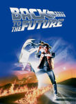
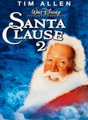
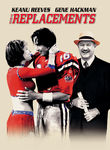
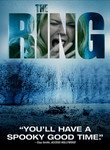
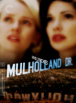
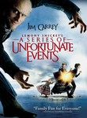
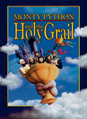
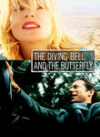

Historical: IMDb 2000s
http://www.imdb.com/chart/2000s
Showing Movies that were previously on this list. (Historical tracking started near the start of 2010.)- Normal View
List contains: 638 items, 1193.5 hours. (20 are missing runtime)
Showing Movies that were previously on this list. (Historical tracking started near the start of 2010.)- Normal View
List contains: 638 items, 1193.5 hours. (20 are missing runtime)
Stephen Klancher
...has seen 316
...has seen 628.3 hours
...has not seen 565.2 hours

Timeline - Covers
Most Recent:
Fracture
First Unseen:
Lost (# 12)
...has seen 316
...has seen 628.3 hours
...has not seen 565.2 hours
Timeline - Covers
Most Recent:
Fracture
First Unseen:
Lost (# 12)
Seen 105 times, Last seen February 13, 2023

Groundhog Day (1993) Releases on 1969-12-31
Stephen Klancher: SEEN 
The joke is obvious but it's also the truth: I watched this movie over and over and over. This was one of a handful of movies we rewatched frequently growing up at my dad's house. I love Bill Murray and I love this movie.
Seen 117 times, Last seen February 12, 2023

The Wizard of Oz (1939) Releases on 1939-08-25
Stephen Klancher: SEEN
I liked the Wizard of Oz and have often been excited to see newer takes on it. At some point my mom took me to see Wicked and I loved it. Though it turned out disappointing, I remember being excited over the SciFi variant Tin Man. Also, Zardoz. haha.
Seen 82 times, Last seen February 10, 2023

The Princess Bride (1987)
Stephen Klancher: SEEN
We rented this movie at my dad's house when I was very young. So young in fact that I had no idea what the movie was called. I just had a vague memory of a really cool movie about a man in black with the storytelling grandfather as a frame for the adventure. In high school somehow this movie came up and I was excited to learn not only the title of the movie lost in my memories, but also that many other people liked it too. "As you wish" and "My name is Inigo Montoya" always make me smile.
Seen 105 times, Last seen February 9, 2023

The Shawshank Redemption (1994)
Stephen Klancher: SEEN
I'm not sure it forever deserves the top spot on IMDB, but definitely a good movie. I remember watching it on TV some night in Jr High when I was supposed to be working some project... let's see, do a diorama of a scene from 1984 or watch Shawshank? Hmm...
Seen 105 times, Last seen February 8, 2023

Cool Hand Luke (1967)
Stephen Klancher: June 21, 2009
Aptly named... he's a cool character. The Lucy and 50 eggs scenes were fun. I liked the simple question he asked of god near the end: "You made me like I am; just where do I fit?"
Seen 112 times, Last seen February 7, 2023

Back to the Future (1985)
Stephen Klancher: SEEN
I love the Back to the Future trilogy. Yes even the third one. I've always especially loved the music. Watching Predator at some point I was wondering why it was reminding me of Back to the Future... and it turns out the same guy did the music...
Seen 104 times, Last seen February 6, 2023

The Big Lebowski (1998) Releases on 1998-02-15
Stephen Klancher: SEEN
Brett introduced me to Lebowski and I have since watched it many times. Love it.
Seen 93 times, Last seen February 4, 2023

Se7en (1995)
Stephen Klancher: SEEN
This movie did not strike me as much as most people I guess. Am I too desensitized? I just seem to remember Brad Pitt swearing a lot.

Seen 107 times, Last seen February 2, 2023

Pulp Fiction (1994) Releases on 1994-10-14
Stephen Klancher: SEEN
Very fun. Reading Quentin Tarantino and Philosophy (http://www.amazon.com/Quentin-Tarantino-Philosophy-Popular-Culture/dp/0812696344) made it even more so.
Seen 1651 times, Last seen January 30, 2023

Eternal Sunshine of the Spotless Mind (2004) Releases on 1969-12-31
Stephen Klancher: SEEN
I love this movie. Would I zap my brain? Probably. Maybe I already did. How would I know? Whatever. I love this movie.

Seen 98 times, Last seen January 24, 2023

Fight Club (1999)
Stephen Klancher: SEEN
There's so much that is cool about this movie. But mostly the impact of the reveal the first time you watch it. The sort of Sixth-Sense change where you can then rewatch it as an entirely different experience.
Seen 100 times, Last seen January 19, 2023

The Matrix (1999)
Stephen Klancher: SEEN
My parents (divorced) got in an argument over this movie. My dad wanted to take me to see it, but my mom, more strict at the time, didn't want it to happen. At some point she finally gave in, but then we had to go see it in the cheaper, crappier theater. It was still amazing, of course. And as Bob can attest, at any given time my dad's house on Mountain Oak probably had the DVD of this or Fifth Element playing. It's too bad they never made any sequels to this. <i>None. Never.</i>

Seen 112 times, Last seen January 7, 2023

Star Wars: Episode IV - A New Hope (1977)
Stephen Klancher: SEEN
I am very much a Star Wars fan. I've read about 40 books, played a handful of games, and seen most of what there is to see. There were some summers growing up where I was mostly watching the Star Wars trilogy and playing Mario 3.
2011-02-26 - Watched Star Wars Begins, the excellent fan-made documentary.
2011-02-26 - Watched Star Wars Begins, the excellent fan-made documentary.
Seen 92 times, Last seen January 6, 2023

The Muppet Movie (1979) Releases on 1979-06-22


Seen 15 times, Last seen December 20, 2017

Aliens (1986)
Stephen Klancher: January 17, 2008
Game over man! A totally different kind of cool than the first one. Plus like half of the sounds from StarCraft are from this movie.
Seen 274 times, Last seen December 20, 2017

Star Wars: Episode II - Attack of the Clones (2002) Releases on 2002-05-16
Stephen Klancher: May 17, 2002
For what it's worth, Episode II is a zillion times better than Episode I.
Seen 994 times, Last seen December 20, 2017

Star Wars: Episode III - Revenge of the Sith (2005) Releases on 2005-05-19
Stephen Klancher: May 19, 2005
I <3 Star Wars. Of course the original trilogy is better, but I still love this movie.
Seen 2413 times, Last seen December 20, 2017

The Lord of the Rings: The Return of the King (2003) Releases on 2003-12-17
Stephen Klancher: December 17, 2003
Probably my favorite of the trilogy, but they are all fantastic.
Seen 288 times, Last seen December 20, 2017

How the Grinch Stole Christmas (2000)
Seen 2465 times, Last seen December 20, 2017

Gladiator (2000)
Stephen Klancher: SEEN
Fun movie... I always picture the "walking through the fields" sequence... Also, Battle!
Seen 2353 times, Last seen December 20, 2017
Requiem for a Dream (2000)
Stephen Klancher: SEEN
I love the theme music (Clint Mansell's "Lux Aeterna"). But man, remembering this movie just makes me think "life is terrible."

Seen 1923 times, Last seen December 20, 2017
Harry Potter and the Sorcerer's Stone (2001)
Seen 2177 times, Last seen December 20, 2017

Donnie Darko (2001) Releases on 1969-12-31
Stephen Klancher: SEEN
I remember getting mad because I was watching this at Alyson's house with a group where half of the people were really interested in the movie and the less interested half were making it hard to hear and enjoy it. Regardless it was fun. I always looked for more meaning in it than I was able to find though. But it created a great atmosphere and was a lot of fun to watch.
Seen 59 times, Last seen December 20, 2017

8 Mile (2002) Releases on 2002-11-08
Seen 132 times, Last seen December 20, 2017

The Santa Clause 2 (2002)
Stephen Klancher: November 29, 2009
It's a holiday and I'm with family, so... it's a holiday family movie. I liked the original and watched it a lot growing up.

Seen 1475 times, Last seen December 20, 2017

Love Actually (2003)
Stephen Klancher: August 7, 2009
I have this memory that I was supposed to go see this movie with my girlfriend when it came out in theaters about 6 years ago. But we broke up that weekend or the week before or something. And then I didn't want to watch it for a long time because of that connection. And it's a good thing I didn't. Not only is it full of the sappy stuff that gets to me, but had Beatles and Dido music. The movie was carefully crafted to murder me. I'm glad I didn't watch it back then, and it wasn't lacking in effect on me even now.
That said, it was a fun movie with a zillion cool actors and very pretty girls. That was also a fault as there were way too many threads. There could have been fewer with more time devoted to them with greater effect, but still, fun overall.
"Well, because I thought it would be something worse."
[incredulous] "Worse than the total agony of being in love?"
That said, it was a fun movie with a zillion cool actors and very pretty girls. That was also a fault as there were way too many threads. There could have been fewer with more time devoted to them with greater effect, but still, fun overall.
"Well, because I thought it would be something worse."
[incredulous] "Worse than the total agony of being in love?"
Seen 1504 times, Last seen December 20, 2017

City of God (2002) Releases on 2004-02-13
Stephen Klancher: SEEN
I got a hold of this movie because of Erin near the beginning of college, although I can't remember for certain if I watched it with her or not. The main impression I remember about this movie is that it was vivid both in color and content.
Seen 964 times, Last seen December 20, 2017

The Incredibles (2004)
Stephen Klancher: SEEN
Pixar movies are pretty great. They do a great job of making either a kids movie that adults can enjoy or just a good movie which happens to be acceptable for kids as well.
Seen 281 times, Last seen December 20, 2017

Elf (2003)
Stephen Klancher: November 28, 2009
It pains the OCD part of my brain to mark this as watched when I missed the beginning and was not in the room the whole time... It was alright. It's Will Ferrell, sometimes I think he's funny and sometimes not. It's probably mood as much as content with him.
Seen 1573 times, Last seen December 20, 2017

Harry Potter and the Goblet of Fire (2005)

Seen 1913 times, Last seen December 20, 2017
The Notebook (2004) Releases on 2004-06-25

Seen 2518 times, Last seen December 20, 2017
Inglourious Basterds (2009)
Stephen Klancher: August 23, 2009
Brad Pitt was fun but Col. Landa (Christoph Waltz) was great. Some of the violence was pretty gruesome even considering it was Terantino. It made me remember having read someone comparing the Nazis watching Nation's Pride cheering the violence against the Allied soldiers to the audience cheering the violence on screen against the Nazis. Anyway, the inferno was pretty impressive and the face projected on the smoke was creepy cool.
Seen 754 times, Last seen December 20, 2017
Charlie and the Chocolate Factory (2005)


Seen 2452 times, Last seen December 20, 2017
Batman Begins (2005)
Stephen Klancher: SEEN
mmm, Batman. I've enjoyed Batman at every level of serious and silly, but this was a really good job of a more serious portrayal.
Seen 104 times, Last seen December 20, 2017

Crash (2004)
Seen 101 times, Last seen December 20, 2017
Christmas with the Kranks (2004) Releases on 2004-11-24
Seen 2517 times, Last seen December 20, 2017

The Departed (2006)
Stephen Klancher: SEEN
I think this is one of the finest remakes ever. I saw the original Infernal Affairs several years prior and loved it. But this version was excellent in its own right.
Seen 1713 times, Last seen December 20, 2017

Watchmen (2009)
Stephen Klancher: March 10, 2009
I really enjoyed that movie. Visually awesome and some interesting characters. And with how much was supposedly removed from the theatrical cut, I look forward to the DVD. I had only read a few pages of the comic, but the beginning of the movie matched so well that it felt like deja vu.

Seen 101 times, Last seen December 20, 2017
The Santa Clause 3: The Escape Clause (2006) Releases on 2006-11-03
Seen 980 times, Last seen December 20, 2017

Pan's Labyrinth (2006) Releases on 2007-01-19
Stephen Klancher: January 27, 2007
This was disappointing to me because I wanted the whole movie to be like the fantasy scenes on which the trailer focused. Also "Pan's Labyrinth" became a pronouncement of intention to crush a man's face with a bottle as was done in this movie.
Seen 195 times, Last seen December 20, 2017
The Holiday (2006) Releases on 2006-12-08
Seen 1167 times, Last seen December 20, 2017

X-Men Origins: Wolverine (2009)
Stephen Klancher: May 2, 2009
Fun combat scenes and I love Wolverine, but seriously, most scenes in this were just like "why is this happening?", "how does this make sense?" If not for characters I love, it would be easy to call this a bad movie. So as it stands it hurts to say it: This is a bad movie.
Seen 2522 times, Last seen December 20, 2017

The Dark Knight (2008)
Stephen Klancher: July 19, 2008
Saw on the IMAX twice on the first Saturday after release. OMG so good! Got a picture of me with the Joker at the theater too.
Seen 997 times, Last seen December 20, 2017

There Will Be Blood (2007)
Stephen Klancher: April 17, 2008
Omg he'll drink your milkshake. Really, he'll do it. I think there may have been a good movie here. But all I remember is that he'll drink your milkshake.
Seen 1963 times, Last seen December 20, 2017

No Country for Old Men (2007)
Stephen Klancher: November 19, 2007
Wow, this was cool. The ending was kinda like, "wait, what?" but the bad guy Anton was very memorable. "What's the most you ever lost on a coin toss?"
Seen 2514 times, Last seen December 20, 2017

The Prestige (2006)
Stephen Klancher: SEEN
I liked this a lot. Although I seem to remember that something about it lead to an argument. Whatever, very fun.
Seen 2057 times, Last seen December 20, 2017

Avatar (2009)
Stephen Klancher: January 9, 2010
The plot is basically FernGully, which isn't a major criticism, it just follows an unsurprising path. The visuals were amazing. The 3D was very cool, but even without that the environments were incredible. It made me think of exploring new areas in World of Warcraft for the first time.
Seen 10 times, Last seen December 20, 2017
In Bruges (2008)

Seen 18 times, Last seen December 20, 2017
Deck the Halls (2006) Releases on 2006-11-22
Seen 169 times, Last seen December 20, 2017
A Christmas Carol (2009) Releases on 2009-11-06
Seen 16 times, Last seen December 19, 2017

American Beauty (1999)
Stephen Klancher: December 31, 2002
Fantastic movie. Many good quotables. I tend to rather watch something new instead of rewatching anything, but if I see this on I'm completely unable to pull myself away.
Seen 14 times, Last seen December 18, 2017

Vertigo (1958) Releases on 1969-12-31
Seen 13 times, Last seen December 17, 2017

Dr. Strangelove or: How I Learned to Stop Worrying and Love the Bomb (1964)
Stephen Klancher: SEEN
Peter Sellers is amazing. Just remember, "you can't fight in here! This is the War Room!"
Seen 32 times, Last seen December 16, 2017

Hellboy (2004) Releases on 2004-03-30
Seen 481 times, Last seen December 16, 2017
Harry Potter and the Chamber of Secrets (2002)

Seen 17 times, Last seen December 16, 2017

Raiders of the Lost Ark (1981)
Stephen Klancher: SEEN
I love Indiana Jones and Harrison Ford. I watched a lot of Star Wars and Indiana Jones while growing up. Just thinking about it makes me want to watch again...
Seen 226 times, Last seen December 16, 2017
Pearl Harbor (2001)
Stephen Klancher: SEEN
I remember leaving to go to the bathroom in the middle of the movie and then just walking around the theater for a while. It was a looong movie and not good enough to warrant it. This song from Team America sums it up best:
I miss you more then Michael Bay missed the mark
When he made Pearl Harbor
I miss you more than that movie missed the point
And that's an awful lot girl
I miss you more then Michael Bay missed the mark
When he made Pearl Harbor
I miss you more than that movie missed the point
And that's an awful lot girl

Seen 294 times, Last seen December 16, 2017

The Incredible Hulk (2008)
Seen 15 times, Last seen December 15, 2017

Casablanca (1942)
Stephen Klancher: August 4, 2003
I borrowed and watched this summer of 2002. Even then I had a vague idea that I wanted to see some of the most well known movies, with the IMDB top 250 as my idea for a good start.
I really enjoyed it! And so many elements or lines in it that could be called cliche now were actually their origin. This is the movie that solidified my interest in watching well rated "old movies." Compare to Citizen Kane.
I really enjoyed it! And so many elements or lines in it that could be called cliche now were actually their origin. This is the movie that solidified my interest in watching well rated "old movies." Compare to Citizen Kane.
Seen 17 times, Last seen December 12, 2017

Inception (2010) Releases on 2010-07-16
Stephen Klancher: July 17, 2010
Dreams within dreams... there was never a chance I wouldn't like this movie. It was incredibly fun.
Seen 14 times, Last seen December 11, 2017

Star Wars: Episode V - The Empire Strikes Back (1980)
Stephen Klancher: SEEN
This was the one I watched least when I was younger. The slightly less familiarity has made it more attractive for rewatching in later years. Also it's Star Wars. <3

Seen 522 times, Last seen December 9, 2017

Harry Potter and the Prisoner of Azkaban (2004)
Seen 75 times, Last seen December 9, 2017

Howl's Moving Castle (2004) Releases on 1969-12-31
Seen 334 times, Last seen December 9, 2017
Harry Potter and the Order of the Phoenix (2007)
Seen 20 times, Last seen December 9, 2017
Punisher: War Zone (2008) Releases on 2008-12-05
Seen 13 times, Last seen December 9, 2017

9 (2009) Releases on 1969-12-31
Seen 1552 times, Last seen December 9, 2017

Into the Wild (2007)
Stephen Klancher: April 22, 2009
Good movie. Better than I thought it would be from the description and suited my mood today.
Seen 13 times, Last seen December 8, 2017

Schindler's List (1993)
Stephen Klancher: SEEN
I watched this in my 9th grade history class. Liam Neeson back when his only power was being German. No force, no lightsaber. But seriously, this is a serious movie. I don't remember much of the specifics at this point, but watching Life is Beautiful more recently made me think of watching this.
Seen 1539 times, Last seen December 2, 2017

Memento (2000) Releases on 2000-10-11
Stephen Klancher: SEEN
Showing events out of chronological order can range from confusing to really cool. Memento used it in a gimmicky way, but it turned out great.
Seen 1025 times, Last seen December 2, 2017

Kill Bill: Vol. 1 (2003) Releases on 2003-10-10
Stephen Klancher: October 18, 2003
It was super exciting to go see this in the theater. I had watched other Tarantino movies over the previous year or two and introduced them to Brett sometime after we met. And seeing a movie like that in a theater down the street from a university makes for a fun crowd.
Seen 1517 times, Last seen December 2, 2017
Pirates of the Caribbean: The Curse of the Black Pearl (2003) Releases on 2003-07-09
Stephen Klancher: July 17, 2003
I had very low expectations for this movie, but people kept telling me that it was good... I loved it! But then the second one came out and seemed so pointless that, at the moment, I still haven't seen the third one.
Seen 98 times, Last seen December 2, 2017
Napoleon Dynamite (2004) Releases on 2004-01-17
Seen 57 times, Last seen December 2, 2017
Silent Hill (2006) Releases on 2006-04-21
Seen 21 times, Last seen December 2, 2017
The Strangers (2008) Releases on 1969-12-31
Seen 6 times, Last seen November 26, 2017
Born Killers (2005) Releases on 2005-10-22
Seen 1043 times, Last seen November 25, 2017

The Lord of the Rings: The Two Towers (2002) Releases on 2002-12-18


Seen 59 times, Last seen November 25, 2017
Jeepers Creepers (2001) Releases on 2001-08-31
Seen 190 times, Last seen November 25, 2017
Black Hawk Down (2001) Releases on 2002-01-18
Seen 116 times, Last seen November 25, 2017
The Machinist (2004) Releases on 2004-11-11
Seen 168 times, Last seen November 25, 2017

Saw (2004) Releases on 2004-10-29
Seen 20 times, Last seen November 25, 2017
The Reader (2008) Releases on 2009-01-09
Seen 29 times, Last seen November 18, 2017
Scary Movie (2000) Releases on 2000-07-07
Seen 34 times, Last seen November 18, 2017

The Replacements (2000) Releases on 2000-08-11
Seen 1651 times, Last seen November 18, 2017

Snatch. (2000)
Stephen Klancher: SEEN
Oh man I loved this movie. So many cool characters and plenty of good music. I still need to rewatch it with the pikey subtitles someday.
Seen 1713 times, Last seen November 18, 2017

V for Vendetta (2005) Releases on 2006-03-17
Stephen Klancher: March 17, 2006
I loved this movie. In terms of pure enjoyment coming out of the theater this ranks near the top for me. All kinds of cool.


Seen 307 times, Last seen November 11, 2017

Monsters, Inc. (2001)
Seen 866 times, Last seen November 11, 2017

Spirited Away (2001) Releases on 2001-07-20
Stephen Klancher: April 6, 2003
I watched with in a theater in Bakersfield with my mom. I don't know if it was a rerelease or late after the release or if this is all they did in Bakersfield, but I seem to remember that it was only playing on this one screen in town and it was an abnormally small one.
I really enjoyed the animation and the fantasy of the whole setting.
I really enjoyed the animation and the fantasy of the whole setting.

Seen 70 times, Last seen November 11, 2017

The Ring (2002)
Stephen Klancher: SEEN
I remember sitting in a dark room after this movie finished and being in a totally freaked out state of mind. It did a good job of creating that feeling. Too bad the sequel couldn't keep it up.

Seen 147 times, Last seen November 11, 2017
Halloween (2007) Releases on 2007-08-31


Seen 66 times, Last seen November 3, 2017
Freddy vs. Jason (2003) Releases on 2003-08-13
Seen 56 times, Last seen November 3, 2017

Talladega Nights: The Ballad of Ricky Bobby (2006) Releases on 2006-08-04
Seen 8 times, Last seen October 28, 2017
Thir13en Ghosts (2001) Releases on 2001-10-26
Seen 10 times, Last seen October 28, 2017
Cabin Fever (2002) Releases on 2002-09-14
Seen 69 times, Last seen October 28, 2017

Van Helsing (2004) Releases on 2004-05-07
Stephen Klancher: May 4, 2004
I saw this not long after having watched the anime Hellsing. I knew this wasn't related and I knew I wouldn't like it as much as the anime, but even with low expectations, this still disappointing. I seem to remember Frankenstein's monster being more interesting than most of the rest of the movie.
Seen 9 times, Last seen October 28, 2017
30 Days of Night (2007) Releases on 2007-10-16
Seen 120 times, Last seen October 28, 2017

Jennifer's Body (2009)
Stephen Klancher: September 20, 2009
That was actually a lot of fun. Way better than I expected. Creepy at some points, but mostly hilarious.
Seen 1360 times, Last seen October 26, 2017

Star Trek (2009)
Stephen Klancher: May 8, 2009
The casting in this was great. The actors felt so natural playing these very well established characters, perfectly mixing the feel of the old characters while still feeling brand new. IMAX + first day + surpassing expectations = <3
Seen 20 times, Last seen October 26, 2017

I Love You, Man (2009)
Stephen Klancher: September 10, 2009
Awkwardness reached dangerous levels at some points, but was a very funny movie.
"I still want to hang out despite that joke..."
"I still want to hang out despite that joke..."
Seen 238 times, Last seen October 14, 2017

Mulholland Dr. (2001)
Seen 789 times, Last seen October 14, 2017

Oldboy (2003) Releases on 1969-12-31
Stephen Klancher: SEEN
This was a pretty mindfuck movie when I first saw it. I'd still like to watch the sequel/prequel at some point.
Seen 925 times, Last seen October 14, 2017

Up (2009)
Stephen Klancher: June 14, 2009
That was a fantastic movie. Visually very pretty. The kid and the dog are a great counterpoint to the old man. Not many movies manage to be so happy and kid -friendly and actually be so amazing. I walked out of the theater happy!
Seen 965 times, Last seen October 14, 2017

The Hangover (2009)
Stephen Klancher: June 6, 2009
Very funny. In addition to the main guys, Mike Tyson and Ken Jeong were great!
Seen 489 times, Last seen October 8, 2017

The Chronicles of Narnia: The Lion, the Witch and the Wardrobe (2005)
Seen 130 times, Last seen October 7, 2017
The Patriot (2000) Releases on 2000-06-28

Seen 135 times, Last seen October 7, 2017
Pirates of the Caribbean: Dead Man's Chest (2006)
Stephen Klancher: SEEN
Whoops, I had a positive comment here because I thought it was the first one. I loved the first one. This one was nowhere near that. I have some vague desire to see the third one, but this movie severely weakened that desire.

Seen 61 times, Last seen October 7, 2017
The House Bunny (2008) Releases on 2008-08-22
Seen 6 times, Last seen September 30, 2017
Lara Croft: Tomb Raider (2001) Releases on 2001-06-15
Seen 27 times, Last seen September 30, 2017

The Hitchhiker's Guide to the Galaxy (2005) Releases on 2005-04-29
Stephen Klancher: May 14, 2005
Though, for me, it doesn't beat the old BBC mini series, this was still a fun version of Hitchhiker.
Seen 11 times, Last seen September 30, 2017

The Fountain (2006) Releases on 2006-11-22
Seen 244 times, Last seen September 30, 2017

Hot Fuzz (2007)
Seen 39 times, Last seen September 30, 2017
Gone Baby Gone (2007)
Stephen Klancher: November 28, 2008
Second Blu-ray I watched. The movie builds to a choice with no right answer. Well made movie.
Seen 273 times, Last seen September 30, 2017

The Wrestler (2008)
Stephen Klancher: February 25, 2009
Good movie because of how authentic the portrayal of the characters felt and how well they conveyed the desperation of parts of their world.
Seen 48 times, Last seen September 23, 2017

Serenity (2005) Releases on 2005-09-30
Stephen Klancher: September 30, 2005
When I moved back to SD to start school in 2005 I was told I had a week to watch some series I hadn't heard of before we would go see the movie that came out of it. So then I watched Firefly and my life was improved.
Seen 780 times, Last seen September 23, 2017

Casino Royale (2006) Releases on 2006-11-17
Seen 142 times, Last seen September 23, 2017
Pirates of the Caribbean: At World's End (2007)
Seen 11 times, Last seen September 23, 2017

Fracture (2007) Releases on 2007-04-20
Stephen Klancher: November 11, 2017
Seen 194 times, Last seen September 18, 2017
Wet Hot American Summer (2001) Releases on 2001-01-23
Seen 269 times, Last seen September 18, 2017
Harry Potter and the Half-Blood Prince (2009)
Seen 6 times, Last seen September 18, 2017
Death Note (2006) Releases on 1969-12-31
Seen 6 times, Last seen August 19, 2017
The Matrix Reloaded (2003) Releases on 2003-05-15
Stephen Klancher: May 14, 2003
Not worthy of the original but I did like the scene with The Architect.
Seen 205 times, Last seen August 19, 2017

Wedding Crashers (2005) Releases on 2005-07-15
Seen 1584 times, Last seen August 19, 2017

Sin City (2005) Releases on 2005-04-01
Stephen Klancher: April 1, 2005
Super cool style and fun characters. I read one of the graphic novels at some point too. I remember watching it a second time in Stockton in a theater on UOP campus. That was the summer I had the construction job, so it probably made having some fun on a weekend trip even more enjoyable and memorable.
Seen 13 times, Last seen August 19, 2017
The Number 23 (2007) Releases on 1969-12-31


Seen 152 times, Last seen August 12, 2017

The Curious Case of Benjamin Button (2008) Releases on 2008-12-25
Stephen Klancher: January 4, 2009
I did not enjoy this as much as many people, which is a shame because I was looking forward to it. But it was a decent movie. It started too slow... an hour in I didn't find myself caring about the characters yet. It got better after that point though.
Though perhaps I have myself to blame, as I do seem to remember texting back and forth with Jenith for a good bit of the beginning of the movie.
Though perhaps I have myself to blame, as I do seem to remember texting back and forth with Jenith for a good bit of the beginning of the movie.

Seen 34 times, Last seen July 22, 2017

Mystic River (2003) Releases on 2003-10-15
Stephen Klancher: January 24, 2004
I saw this with my mom when it was in theaters. I forget much of the content of the movie at this point but I remember being impressed by it.
Seen 92 times, Last seen July 22, 2017
Shaun of the Dead (2004) Releases on 2004-09-24
Seen 239 times, Last seen July 22, 2017
The Devil Wears Prada (2006)

Seen 6 times, Last seen July 8, 2017

The Girl with the Dragon Tattoo (2009)
Stephen Klancher: July 25, 2010
It had a slow, but just right pace that keep me interested and not even notice two and half hours go by. The girl was pretty cool. Reminds me of another Swedish movie I saw, Let the Right One In: the same kind of pacing and focused on a "weird" girl. I'll be interested to see the other ones when the come out eventually.
Seen 137 times, Last seen July 8, 2017

The Passion of the Christ (2004) Releases on 2004-02-25

Seen 21 times, Last seen June 10, 2017

AVP: Alien vs. Predator (2004)
Stephen Klancher: February 11, 2009
Silly, but it's still a great "What If": What if Aliens and Predator were in the same movie? Definitely some fun visuals though.
Seen 42 times, Last seen June 3, 2017

Kingdom of Heaven (2005) Releases on 2005-05-02
Seen 13 times, Last seen June 3, 2017

AVPR: Aliens vs Predator - Requiem (2007)
Stephen Klancher: February 12, 2009
That was a fun action movie with good one liners. Better in most respects than the first one. Most of the scenes were too dark. But man... Predaliens... awesome.
Seen 62 times, Last seen May 20, 2017
Wanted (2008)
Stephen Klancher: July 7, 2008
So bad and so good. All kinds of problems if you want to really take it seriously, but overall it's just really fun to see. Reminded me of Jumper a little in that regard, but this is far more fun.
Seen 198 times, Last seen May 13, 2017
The Fast and the Furious: Tokyo Drift (2006)

Seen 20 times, Last seen May 6, 2017
Idiocracy (2006) Releases on 2007-01-25
Seen 644 times, Last seen May 6, 2017

Slumdog Millionaire (2008)
Stephen Klancher: February 15, 2009
Fantastic music and a very well put together movie. I can see why it was so well liked.
Seen 6 times, Last seen April 29, 2017
Atlantis: The Lost Empire (2001) Releases on 2001-06-15
Seen 13 times, Last seen April 29, 2017
The Midnight Meat Train (2008) Releases on 2008-08-07
Seen 20 times, Last seen April 29, 2017
The Boy in the Striped Pajamas (2008) Releases on 2008-08-28
Seen 6 times, Last seen April 29, 2017
RocknRolla (2008)
Stephen Klancher: August 11, 2010
Ridiculously fun movie. Plenty of things to like, especially if you like other Guy Ritchie movies, but one of the things I loved most were the invincible Russians in the chase scene.


Seen 36 times, Last seen April 22, 2017
P.S. I Love You (2007) Releases on 2007-12-21
Seen 6 times, Last seen April 15, 2017
Ghost in the Shell 2: Innocence (2004) Releases on 2004-09-24
Seen 5 times, Last seen April 15, 2017
Mini's First Time (2006) Releases on 2007-08-09

Seen 7 times, Last seen April 10, 2017
Brideshead Revisited (2008) Releases on 2008-08-15

Seen 6 times, Last seen April 8, 2017

Lost in Translation (2003) Releases on 2003-10-03
Seen 5 times, Last seen April 8, 2017
Cirque du Freak: The Vampire's Assistant (2009)


Seen 175 times, Last seen April 2, 2017

X2 (2003) Releases on 2003-05-02
Seen 173 times, Last seen April 2, 2017

The School of Rock (2003) Releases on 2003-10-03
Seen 450 times, Last seen April 2, 2017

X-Men: The Last Stand (2006) Releases on 2006-05-26

Seen 101 times, Last seen March 26, 2017

The Phantom of the Opera (2004) Releases on 2005-01-21
Seen 13 times, Last seen March 26, 2017

Tenacious D in The Pick of Destiny (2006) Releases on 2006-11-22
Seen 306 times, Last seen March 26, 2017
Sherlock Holmes (2009)
Stephen Klancher: January 3, 2010
I enjoy Robert Downey Jr. and Jude Law, so this was inevitably fun. I haven't read any of the books, but if I had to guess I would say this is more identifiable as a Guy Richie movie than a Sherlock Holmes story. There was even a boxing scene that looked like it was right out of Snatch and in my mind I was hearing "Golden brown, textured like sun..."
Seen 185 times, Last seen March 19, 2017

Lemony Snicket's A Series of Unfortunate Events (2004)
Seen 6 times, Last seen March 11, 2017
The Assassination of Jesse James by the Coward Robert Ford (2007)
Seen 541 times, Last seen March 11, 2017
Taken (2008)
Stephen Klancher: January 6, 2009
I guess I saw this before it came out in theaters. I didn't even know that when I was watching it at home. A lot of implausible things in the "story", but oh well, still an enjoyable action movie. But I kept wanting to know: why doesn't he just use his lightsaber??
Seen 1773 times, Last seen March 5, 2017

Finding Nemo (2003)
Stephen Klancher: SEEN
The main thing I remember about this movie was that it had very pretty color. And I think I watched it with a few other people in the common room of our floor of my freshman dorm.
Seen 13 times, Last seen March 5, 2017

Dragonball Evolution (2009)
Stephen Klancher: June 4, 2009
As a fan of Dragonball (Z at least) I can't help but enjoy it some. And my expectations were already so low that disappointment was nearly impossible. What was left was just the fun of seeing things and characters I enjoyed. I can't believe they had Christine from Phantom of the Opera as Bulma and Chow Yun-Fat as Roshi. Chi Chi was really cute. No Krillin unfortunately. Bulma did have her Dragonball radar and her capsule transportation. So, yeah, I wouldn't recommend this to anyone, but I couldn't help but watch it. Kamehameha ftw!
Seen 70 times, Last seen February 25, 2017
Resident Evil (2002) Releases on 2002-03-15
Seen 82 times, Last seen February 25, 2017

Underworld (2003) Releases on 2003-09-19
Seen 13 times, Last seen February 25, 2017
The Last Samurai (2003) Releases on 2003-12-05
Seen 49 times, Last seen February 19, 2017
A Walk to Remember (2002) Releases on 2002-01-23

Seen 41 times, Last seen February 19, 2017
Resident Evil: Extinction (2007) Releases on 2007-09-21

Seen 102 times, Last seen February 5, 2017
Old School (2003) Releases on 2003-02-21
Seen 37 times, Last seen February 5, 2017

Forgetting Sarah Marshall (2008)
Stephen Klancher: April 20, 2008
Pretty damn funny. Also very cool to see having stayed at Turtle Bay in those same rooms and eaten at the same restaurants and bars.
Seen 14 times, Last seen February 5, 2017
xXx: State of the Union (2005) Releases on 2005-04-27
Seen 6 times, Last seen January 22, 2017

Underworld: Evolution (2006) Releases on 2006-01-20
Seen 57 times, Last seen January 14, 2017
Legally Blonde (2001) Releases on 2001-07-13
Seen 111 times, Last seen January 14, 2017

Superman Returns (2006) Releases on 2006-06-28
Seen 13 times, Last seen January 14, 2017
Angus, Thongs and Perfect Snogging (2008) Releases on 2008-07-25
Seen 57 times, Last seen January 7, 2017

Children of Men (2006)
Stephen Klancher: SEEN
I remember thinking halfway through watching this movie that it had built a very interesting situation. And then it just lost my interest. It built an interesting world though. The death of the worlds youngest person in the beginning immediately grabbed my attention.
Seen 37 times, Last seen January 7, 2017

Indiana Jones and the Kingdom of the Crystal Skull (2008)
Seen 12 times, Last seen December 31, 2016
The Terminal (2004) Releases on 2004-06-09
Seen 6 times, Last seen December 31, 2016

Black Snake Moan (2006) Releases on 2007-03-02
Seen 77 times, Last seen December 31, 2016
Fred Claus (2007) Releases on 2007-11-09
Seen 6 times, Last seen December 25, 2016

Lucky Number Slevin (2006) Releases on 2006-04-07
Seen 30 times, Last seen December 11, 2016
O Brother, Where Art Thou? (2000) Releases on 2000-12-22
Seen 6 times, Last seen December 4, 2016
Burn After Reading (2008) Releases on 1969-12-31
Seen 13 times, Last seen November 26, 2016
The Lizzie McGuire Movie (2003) Releases on 2003-05-02
Seen 226 times, Last seen November 26, 2016
2012 (2009)
Stephen Klancher: May 15, 2011
Watched much of this while hanging out at my dad's house one afternoon.
Seen 63 times, Last seen November 20, 2016
The Da Vinci Code (2006) Releases on 2006-05-19
Seen 26 times, Last seen November 13, 2016

28 Days Later... (2002) Releases on 2003-06-27
Stephen Klancher: June 27, 2003
Went for a run in the morning with my friend Nick, then we got drinks at Sonic, played GTA:Vice City, and went to see this movie.
Seen 32 times, Last seen November 13, 2016
Angels & Demons (2009) Releases on 2009-05-15
Seen 509 times, Last seen November 13, 2016

Zombieland (2009)
Seen 31 times, Last seen November 6, 2016
The Texas Chainsaw Massacre (2003) Releases on 2003-10-15
Seen 88 times, Last seen November 6, 2016
Sweeney Todd: The Demon Barber of Fleet Street (2007)
Seen 5 times, Last seen November 6, 2016
Pandorum (2009) Releases on 2009-09-25
Stephen Klancher: April 7, 2011
A fun and appropriate movie to watch as I near the end of Dead Space 2.
Seen 49 times, Last seen October 24, 2016
Bridget Jones's Diary (2001) Releases on 2001-04-13
Seen 5 times, Last seen October 24, 2016
Dreamcatcher (2003) Releases on 2003-03-21
Seen 19 times, Last seen October 24, 2016

The Devil's Rejects (2005) Releases on 2005-05-11
Seen 74 times, Last seen October 18, 2016
The Dreamers (2003) Releases on 2003-09-01
Seen 24 times, Last seen October 18, 2016
A Cinderella Story (2004) Releases on 2004-07-10
Seen 5 times, Last seen October 18, 2016
The Uninvited (2009) Releases on 2009-01-30
Seen 30 times, Last seen October 12, 2016
Bridget Jones: The Edge of Reason (2004) Releases on 2004-11-19

Seen 6 times, Last seen September 25, 2016
Book of Shadows: Blair Witch 2 (2000) Releases on 2000-10-27
Seen 6 times, Last seen September 25, 2016
World Trade Center (2006) Releases on 2006-08-09

Seen 117 times, Last seen September 18, 2016
The Bourne Identity (2002) Releases on 2002-06-14
Seen 679 times, Last seen September 18, 2016

The Bourne Ultimatum (2007)
Seen 35 times, Last seen September 11, 2016

The Count of Monte Cristo (2002)
Seen 53 times, Last seen September 11, 2016

The Bourne Supremacy (2004) Releases on 2004-07-23
Seen 102 times, Last seen September 11, 2016

Step Brothers (2008)
Seen 30 times, Last seen September 11, 2016

The Road (2009)
Stephen Klancher: November 8, 2010
This did a good job creating the desolate environment in the movie, but then felt like it didn't do much with it from there. Disappointing.
Seen 84 times, Last seen August 28, 2016

Ratatouille (2007)
Stephen Klancher: September 24, 2007
I took my little sister Maddi to see this. Pretty good for a family movie.
Seen 132 times, Last seen August 28, 2016
Mr. Nobody (2009) Releases on 2009-09-12
Seen 97 times, Last seen August 28, 2016

Zack and Miri Make a Porno (2008) Releases on 2008-10-31
Seen 215 times, Last seen August 28, 2016
Cloverfield (2008) Releases on 2008-01-16
Seen 649 times, Last seen August 14, 2016
Gran Torino (2008)
Stephen Klancher: January 18, 2009
That was the best movie I've seen in a while. Clint Eastwood is still a badass and the rest of the cast played great as well.
Seen 5 times, Last seen July 25, 2016

Return of the Ghostbusters (2007) Releases on 2007-10-26

Seen 10 times, Last seen July 22, 2016

Wild Strawberries (1957)
Seen 14 times, Last seen July 21, 2016

Blade Runner (1982)
Stephen Klancher: SEEN
I watched this and only thought it was ok. I found out later that the Director's Cut which I watched was lacking the narration of the original. I often really enjoy narration in movies and might have enjoyed this more if I had a clearer understanding of what was going on in some parts. Maybe someday I'll have to rewatch the original version.
Seen 10 times, Last seen July 19, 2016

2001: A Space Odyssey (1968)
Stephen Klancher: SEEN
I think I watched parts of this in my Physics class in high school, then came home and watched the rest. I think there was no justification other than that Mr Loritz just wanted to watch the movie.
Seen 616 times, Last seen July 19, 2016

WALLE (2008)
Stephen Klancher: July 27, 2008
I saw this with Tim and his wife at the tail end of its theater run. Cute movie and the first half or so is another good example of how much can be communicated with no verbal dialog.
Seen 14 times, Last seen July 18, 2016

Lawrence of Arabia (1962)
Stephen Klancher: July 2, 2008
I remember my mom telling me for a long time that this was her favorite movie, so I was excited to watch it. Very cool epic.

Seen 14 times, Last seen July 13, 2016

Citizen Kane (1941)
Stephen Klancher: February 12, 2008
Overrated. Compare to Casablanca because they are both "old movies" (1 year apart) and both always ranked high on movie lists.
Seen 14 times, Last seen July 12, 2016

Django Unchained (2012) Releases on 2012-12-25
Seen 13 times, Last seen July 10, 2016

City Lights (1931)
Stephen Klancher: October 20, 2008
A few lol moments. I'm not very into silent films. I think the main role they should play in modern times is a lesson for filmmakers: You can communicate without saying something directly in dialog.
Seen 6 times, Last seen July 5, 2016
Hearts in Atlantis (2001) Releases on 2001-09-28
Seen 6 times, Last seen July 5, 2016
Charlie Bartlett (2007) Releases on 2008-02-22
Seen 101 times, Last seen July 5, 2016

Terminator Salvation (2009)
Stephen Klancher: May 23, 2009
This is a great movie if you love explosions. I'd trade a lot of explosions for some plot about time paradoxes, or characters with motivations, or some other reason to be interested in the conflict behind the explosions. Perhaps some kind of explosions for plot elements barter system could be worked out... a post-apocalyptic movie economy perhaps?
I think the best thing about this movie was that looking forward to it made me watch the series, which, with a much smaller explosion budget had to create interesting character conflict and X-Files style "small piece of the puzzle" mysteries. The other advantage is that from now on I will be looking at the Rotten Tomato score before seeing a movie.
I think the best thing about this movie was that looking forward to it made me watch the series, which, with a much smaller explosion budget had to create interesting character conflict and X-Files style "small piece of the puzzle" mysteries. The other advantage is that from now on I will be looking at the Rotten Tomato score before seeing a movie.
Seen 4 times, Last seen June 28, 2016
DOA: Dead or Alive (2006) Releases on 2007-06-15
Seen 16 times, Last seen June 27, 2016

12 Angry Men (1957)
Stephen Klancher: October 19, 2007
I actually saw the 1997 version first (Tony Danza!), but I love them both. Such a great thing to have a story focused down to pretty much one room and just watching the characters interact. I liked this (both versions actually) a lot.
Seen 11 times, Last seen June 25, 2016

The Godfather: Part II (1974)
Stephen Klancher: January 2, 2004
I can't say I remember a lot about this movie other than the fact that I watched with Bob not long after college started. And that he heard the third movie was bad so he refused to watch it... so this is where we stopped.
Seen 13 times, Last seen June 24, 2016

The Godfather (1972) Releases on 1972-03-24
Stephen Klancher: SEEN
I don't remember much about this movie directly. The main thing I remember is a comment from a friend while we all watched it together the summer before college. My girlfriend at the time was either disinterested or bothered by the violence, whereas I thought it was a cool movie. By my friend's observation, this was the first time in a long time that I insisted on an opinion contrary to hers. I don't remember being that bad, but the observation was memorable, and this movie reminds me of it.
Seen 43 times, Last seen June 23, 2016

Moon (2009) Releases on 2009-07-10
Stephen Klancher: August 8, 2010
Pretty cool, although I feel like once the viewer understands what is going on there wasn't much in the way of twists or surprises. Still fun to watch though.

Seen 1 times, Last seen June 21, 2016

Star Wars: The Force Awakens (2015)


Seen 99 times, Last seen June 14, 2016

The Hurt Locker (2008)
Seen 4 times, Last seen June 14, 2016
The Wolf of Wall Street (2013)

Seen 2 times, Last seen June 11, 2016

Guardians of the Galaxy (2014)
Stephen Klancher: August 12, 2014
Incredibly fun! All the more so since I went in thinking this was a bunch of characters unknown to me, and then finding out I knew half of them from the Infinity Trilogy.

Seen 5 times, Last seen June 8, 2016

The Imitation Game (2014) Releases on 2014-12-25
Seen 14 times, Last seen June 7, 2016

Kiss Kiss Bang Bang (2005)


Seen 15 times, Last seen June 2, 2016

Toy Story (1995)
Stephen Klancher: SEEN
Pixar is always pretty solid and Tim Allen plus Tom Hanks make for some fun recognizable voice acting.
Seen 13 times, Last seen May 31, 2016

Braveheart (1995)
Stephen Klancher: SEEN
Hmm, I'm not 100% I've seen the beginning of this movie. See this was the second rated R movie I ever saw, with the first being the movie Speed. My mom was on her honeymoon and I was with cousins and other family at a hotel whereever we were on the coast. So we got away with renting rated R movies. I watched Speed in one room and went to the next room and joined them in watching Braveheart. I mostly just remember the iconic, "You can take our lives, but you can never take our freedom!" Also I saw a statue of William Wallace in front of a castle years later. I should rewatch it someday just because now I know and love Patrick McGoohan.
Seen 605 times, Last seen May 29, 2016

Million Dollar Baby (2004)
Stephen Klancher: July 4, 2009
Excellent movie! A lot like Gran Torino. Those three are fantastic actors. Some really hard to watch scenes, but just very good.
Seen 606 times, Last seen May 28, 2016

Hotel Rwanda (2004)
Seen 11 times, Last seen May 26, 2016

Strangers on a Train (1951)
Stephen Klancher: April 5, 2009
Solid main characters made this a lot of fun to see. I kept seeing Bruno as Bill Murray and Guy as Alan Cumming. Bruno was a great clever-psycho bad guy. And that ending had to be the most dangerous merry-go-round in the world.
Seen 14 times, Last seen May 24, 2016

Mr. Smith Goes to Washington (1939)
Seen 6 times, Last seen May 24, 2016
Queen of the Damned (2002) Releases on 2002-02-22
Seen 12 times, Last seen May 23, 2016

Monty Python and the Holy Grail (1975)
Stephen Klancher: SEEN
I had heard every joke long before I actually saw this, so while it was funny, it was underwhelming and not very memorable.
Seen 11 times, Last seen May 22, 2016

Star Wars: Episode VI - Return of the Jedi (1983)
Seen 7 times, Last seen May 21, 2016

The Lion King (1994)
Stephen Klancher: SEEN
Back in the good old days of Disney movies... Scar was a great villain and the song Be Prepared is incredible.
Seen 13 times, Last seen May 20, 2016

Cinema Paradiso (1988) Releases on 1969-12-31
Stephen Klancher: SEEN
I watched this with my mom in Bakersfield at some point. I remember hearing the title and not thinking I was interested, until either I looked it up or she told me it was on the IMDb list... now it was part of the mission! The movie itself was okay...
Seen 15 times, Last seen May 18, 2016

The Green Mile (1999)
Seen 174 times, Last seen May 17, 2016

Daredevil (2003) Releases on 2003-02-14
Seen 20 times, Last seen May 17, 2016
The Human Centipede (2009) Releases on 2009-08-30
Seen 14 times, Last seen May 15, 2016

Alien (1979)
Stephen Klancher: January 15, 2008
I thought I had seen it before. Finally saw for sure now that I'm going through all the Alien and Predator movies with Nick.
Very cool movie.
Very cool movie.
Seen 10 times, Last seen May 13, 2016

It's a Wonderful Life (1946)
Stephen Klancher: SEEN
This was our Christmas movie growing up with my dad and it has ingrained a like of Jimmy Stewart in my brain.
Seen 12 times, Last seen May 12, 2016

The Truman Show (1998)
Stephen Klancher: SEEN
I loved this movie. The only problem was it gave me a more specific scenario for my general paranoia to latch on to. Clearly my life is full of people behind the scenes watching and manipulating my life. If I tune my radio just right I might be able to hear their radio chatter...
Seen 9 times, Last seen May 11, 2016

Barry Lyndon (1975)
Seen 15 times, Last seen May 9, 2016

Gandhi (1982) Releases on 1969-12-31
Stephen Klancher: January 20, 2010
I learn more from Hollywood than I ever did from school. Seems like some of this stuff would have been cool to learn more about in a history class.
Seen 608 times, Last seen May 8, 2016

Mary and Max (2008) Releases on 2009-04-09
Stephen Klancher: December 11, 2010
Weirdly funny and endearing. I was surprised how much I enjoyed it.
Seen 12 times, Last seen May 5, 2016

My Neighbor Totoro (1988)
Stephen Klancher: April 21, 2010
Cat-bus is awesome. Most of what I like in this movie is better done in Spirited Away. But still this was a relaxing movie with good animation and occasionally good music too.
Seen 14 times, Last seen May 4, 2016

Annie Hall (1977) Releases on 1977-04-20
Stephen Klancher: SEEN
I watched this while doing other things and I'm never sure if that means I'm not giving something a fair chance, but I didn't care for this movie.
Seen 16 times, Last seen April 30, 2016

It Happened One Night (1934)
Stephen Klancher: July 7, 2009
I was amused at the Walls of Jericho motif and the fact that they asked for a trumpet at the end. This time, dear, he gave a damn.

Seen 84 times, Last seen April 20, 2016

Kung Fu Panda (2008)
Seen 11 times, Last seen April 1, 2016

The Good, the Bad and the Ugly (1966)
Stephen Klancher: SEEN
I knew I had enjoyed Unforgiven and Shane, but this was the movie which convinced me: I really enjoy westerns! I watched this with a girl I met on a bus. She forgot her purse and I argued with the bus driver and made him wait until she came running up from the previous bus stop. Obviously the only thing to do was invite her over for dinner and a western right?
Seen 14 times, Last seen March 30, 2016
The Sisterhood of the Traveling Pants (2005) Releases on 2005-05-31
Seen 29 times, Last seen March 30, 2016

Borat: Cultural Learnings of America for Make Benefit Glorious Nation of Kazakhstan (2006) Releases on 2006-11-03
Stephen Klancher: November 9, 2006
I did think this was funny, but I clearly did not think it was as funny as the rest of the theater.
Seen 129 times, Last seen March 30, 2016
Ip Man (2008) Releases on 1969-12-31
Seen 20 times, Last seen March 22, 2016
Crouching Tiger, Hidden Dragon (2000)
Stephen Klancher: SEEN
I remember being so pleased when I watched this and, without looking at the subtitles, I understood the phrase "I don't know" spoken in Chinese.
Seen 13 times, Last seen March 15, 2016
The Other Boleyn Girl (2008) Releases on 2008-02-29
Seen 20 times, Last seen March 15, 2016

Babel (2006) Releases on 2006-11-10
Seen 36 times, Last seen March 15, 2016
Blood Diamond (2006) Releases on 2006-12-08
Seen 13 times, Last seen March 15, 2016
Revolutionary Road (2008) Releases on 2008-12-15

Seen 7 times, Last seen March 6, 2016

The Apartment (1960)
Stephen Klancher: December 13, 2008
Early in the movie I felt annoyed that Lemmon felt too much like his comedy character in Some Like It Hot, but overall both he and MacLaine were great in this movie.

Seen 11 times, Last seen March 1, 2016

The Maltese Falcon (1941)
Stephen Klancher: SEEN
One of the early "old" movies that I watched. Enjoying it firmed up the notion that I would actually go through the IMDb list.
Seen 618 times, Last seen February 25, 2016

The Secret in Their Eyes (2009)
Stephen Klancher: July 18, 2010
The last of my initial watch through of the IMDb Top 250. Decent movie. Memorable to me near the end is the line "Tell him at least to talk to me."
Seen 6 times, Last seen February 16, 2016
Perfume: The Story of a Murderer (2006) Releases on 2006-09-07
Seen 10 times, Last seen February 10, 2016

Network (1976) Releases on 1969-12-31
Stephen Klancher: April 25, 2010
A lot of cool moments throughout this. I enjoyed watching Faye Dunaway in Bonnie and Clyde just recently and she and William Holden were great in this.
Seen 6 times, Last seen February 9, 2016

The X Files: I Want to Believe (2008) Releases on 2008-07-25

Seen 67 times, Last seen February 9, 2016
Rocky Balboa (2006) Releases on 2006-12-20
Seen 9 times, Last seen February 4, 2016

Jaws (1975) Releases on 1975-06-20
Stephen Klancher: February 16, 2009
Body in the boat scared the fuck out of me. That was an intense movie.
Seen 6 times, Last seen February 2, 2016
The Ladykillers (2004) Releases on 2004-03-26
Seen 48 times, Last seen January 26, 2016
House of Wax (2005) Releases on 2005-04-26
Seen 62 times, Last seen January 19, 2016

Constantine (2005)
Stephen Klancher: SEEN
I saw this in a free screening at UCSD before it came out. I thought it was very cool. I very much liked both the villainous angel and the whole "devil will collect him personally" thing.
Seen 6 times, Last seen January 19, 2016
The Wedding Date (2005) Releases on 2004-05-16
Seen 40 times, Last seen January 19, 2016

Kill Bill: Vol. 2 (2004) Releases on 2004-04-16

Seen 242 times, Last seen January 12, 2016

Quantum of Solace (2008)

Seen 13 times, Last seen January 6, 2016
The Family Stone (2005) Releases on 2005-11-26
Seen 48 times, Last seen December 15, 2015

Irreversible (2002) Releases on 2002-05-22

Seen 111 times, Last seen December 1, 2015
The Girl Next Door (2004) Releases on 2004-04-09
Seen 13 times, Last seen November 17, 2015

The Others (2001) Releases on 1969-12-31
Seen 6 times, Last seen November 17, 2015
Halloween: Resurrection (2002) Releases on 2002-07-12


Seen 9 times, Last seen October 18, 2015

Terminator 2: Judgment Day (1991)
Seen 40 times, Last seen October 13, 2015
The Adventures of Sharkboy and Lavagirl 3-D (2005) Releases on 2005-06-10
Seen 20 times, Last seen October 6, 2015
Public Enemies (2009)
Stephen Klancher: July 2, 2009
Didn't grab me as much as I would have hoped for something with Johnny Depp and Christian Bale.
Seen 11 times, Last seen September 29, 2015
Spy Kids (2001) Releases on 2001-03-30
Stephen Klancher: SEEN
Between some flight where this was playing and the fact that Maddi loves this movie, I've seen it. There is a decent cast in this movie. Alan Cumming, Antonio Banderas, and Danny Trejo are all cool.
Seen 13 times, Last seen September 29, 2015
Never Back Down (2008) Releases on 2008-03-04
Seen 6 times, Last seen September 22, 2015

Zathura: A Space Adventure (2005) Releases on 2005-11-06
Seen 13 times, Last seen September 22, 2015
The Happening (2008) Releases on 2008-06-11

Seen 66 times, Last seen September 15, 2015

Mission: Impossible III (2006) Releases on 2006-05-05

Seen 19 times, Last seen September 1, 2015
4: Rise of the Silver Surfer (2007)
Seen 6 times, Last seen September 1, 2015

Hachi: A Dog's Tale (2009) Releases on 2009-06-13

Seen 63 times, Last seen August 12, 2015

Terminator 3: Rise of the Machines (2003) Releases on 2003-07-02
Stephen Klancher: July 5, 2003
I don't remember a ton about it, but I seem to remember liking it more than many people did. I liked the "inevitability" ending.

Seen 14 times, Last seen August 12, 2015
Changeling (2008)
Seen 13 times, Last seen July 28, 2015

Grandma's Boy (2006) Releases on 2006-01-06
Stephen Klancher: January 6, 2006
I loved this movie. One of very few movies I went to see a second time in the theater.

Seen 13 times, Last seen June 9, 2015
The League of Extraordinary Gentlemen (2003) Releases on 2003-07-11
Seen 0 times, Last seen June 7, 2015

Boyhood (2014) Releases on 2014-08-15
Seen 15 times, Last seen May 20, 2015

Super Troopers (2001)
Stephen Klancher: SEEN
I watched this first year of college while playing Counter Strike, so I don't remember it quite as well as if I were paying attention. Though it was full of fun shenanigans...
Seen 21 times, Last seen April 21, 2015
Into the Blue (2005) Releases on 2005-09-30
Seen 519 times, Last seen April 8, 2015

District 9 (2009)
Stephen Klancher: January 25, 2010
Incredibly fun and interesting style. Especially in the beginning which was heavy on the news/documentary style. The explosions from the alien weapons were incredibly satisfying and the aliens themselves were fun to look at. One of the things I thought was most interesting was that much of the movie played like a story about refugees in Africa. They just so happened to be from another planet.
Seen 16 times, Last seen March 27, 2015
The Brothers Grimm (2005) Releases on 2005-08-26
Seen 9 times, Last seen March 27, 2015
Hitch (2005)
Stephen Klancher: SEEN
I wasn't expecting much of this but I was surprised that it was actually pretty funny.


Seen 27 times, Last seen March 10, 2015
Marie Antoinette (2006) Releases on 2006-10-20
Seen 42 times, Last seen March 3, 2015
John Tucker Must Die (2006) Releases on 2006-07-27
Seen 6 times, Last seen February 24, 2015
The SpongeBob SquarePants Movie (2004) Releases on 2004-11-14
Seen 71 times, Last seen February 10, 2015

Big Fish (2003) Releases on 2004-01-09
Stephen Klancher: April 3, 2004
Almost more than the movie itself, I remember that after we saw this at the theater on campus at UCSD Brett and I went to Wendy's. I do remember the movie being quite fanciful, which is totally up my alley.
Seen 12 times, Last seen January 27, 2015
The Road to El Dorado (2000) Releases on 2000-03-31
Seen 26 times, Last seen January 13, 2015
Night at the Museum: Battle of the Smithsonian (2009)
Seen 12 times, Last seen January 6, 2015

Team America: World Police (2004) Releases on 2004-10-15
Seen 26 times, Last seen January 6, 2015
Bridge to Terabithia (2007) Releases on 2007-02-10
Seen 72 times, Last seen January 6, 2015

Pineapple Express (2008)
Stephen Klancher: January 19, 2009
Definitely some funny moments, but a much better stoner movie is Grandma's Boy.
Seen 34 times, Last seen December 8, 2014
Dumb and Dumberer: When Harry Met Lloyd (2003) Releases on 2003-06-13
Seen 28 times, Last seen November 24, 2014
Green Street Hooligans (2005) Releases on 2005-09-09
Seen 20 times, Last seen September 28, 2014
Lords of Dogtown (2005) Releases on 2005-06-03
Seen 6 times, Last seen September 21, 2014
Just Married (2003) Releases on 2003-01-08

Seen 6 times, Last seen September 7, 2014
Dead Silence (2007) Releases on 2007-03-16
Seen 332 times, Last seen September 7, 2014
(500) Days of Summer (2009)
Stephen Klancher: January 31, 2010
Fun movie that does a great job of mixing many different styles. It has for me some of the same appeal of Eternal Sunshine of the Spotless Mind. I like the wise little sister. The list of her traits he loves later paired with the same list that he hates. The black & white "love documentary" parts. I like Joseph Gordon-Levitt and Zooey Deschanel, but to me she will always be Dorthy from the high-potential, low-results mini-series Tin Man.
Also, it seems like I like any decent movie with the Manic Pixie Dream Girl archetype.
Also, it seems like I like any decent movie with the Manic Pixie Dream Girl archetype.

Seen 14 times, Last seen August 24, 2014
Maid in Manhattan (2002) Releases on 2002-12-13


Seen 6 times, Last seen August 24, 2014
The Final Cut (2004) Releases on 2004-02-11
Seen 6 times, Last seen August 24, 2014

Man of the Year (2006) Releases on 2006-10-13

Seen 13 times, Last seen August 17, 2014
Step Up 2: The Streets (2008) Releases on 2008-02-14
Seen 6 times, Last seen July 13, 2014
Cheaper by the Dozen 2 (2005) Releases on 2005-12-21
Seen 2 times, Last seen July 11, 2014

Black Swan (2010) Releases on 2010-12-17
Stephen Klancher: December 20, 2010
That was crazy amazing. All I knew going in was there was ballet and it was supposed to be good. Totally surprising and totally insane... the qualities I like most in a movie.
Seen 6 times, Last seen June 22, 2014
Definitely, Maybe (2008) Releases on 2008-01-24

Seen 287 times, Last seen April 21, 2014

Anchorman: The Legend of Ron Burgundy (2004) Releases on 2004-07-09

Seen 8 times, Last seen March 3, 2014
Little Miss Sunshine (2006) Releases on 2006-08-18

Seen 6 times, Last seen February 17, 2014
We Are Marshall (2006) Releases on 2006-12-22
Seen 6 times, Last seen February 17, 2014

Before the Devil Knows You're Dead (2007)
Seen 6 times, Last seen February 17, 2014
Along Came Polly (2004) Releases on 2004-01-12
Seen 6 times, Last seen February 17, 2014

Synecdoche, New York (2008)
Stephen Klancher: September 7, 2009
Wow, that was really cool. I'll probably need to watch that again some time to be able to follow more of it, but I really enjoy that kind of almost dreamy uncertain continuity. Eternal Sunshine probably still my favorite, but I really enjoy these movies written by Kaufman.
Seen 6 times, Last seen February 17, 2014
Pirate Radio (2009) Releases on 2009-11-13
Seen 6 times, Last seen January 27, 2014

The Butterfly Effect (2004) Releases on 2004-01-23
Seen 27 times, Last seen January 20, 2014
13 Going on 30 (2004) Releases on 2004-04-14
Seen 55 times, Last seen November 25, 2013

Cloudy with a Chance of Meatballs (2009) Releases on 2009-09-18
Seen 7 times, Last seen November 12, 2013

Monster House (2006) Releases on 2006-06-15

Seen 14 times, Last seen November 4, 2013
Seed of Chucky (2004) Releases on 2004-11-12

Seen 40 times, Last seen October 7, 2013
The Chronicles of Riddick (2004) Releases on 2004-06-03
Seen 33 times, Last seen October 7, 2013
Pitch Black (2000) Releases on 2000-02-18

Seen 5 times, Last seen September 30, 2013
Lilo & Stitch (2002)
Stephen Klancher: SEEN
I'm going to count this as watched but I think I stopped watching midway because it was not good. Maybe I should already know I'm too old for Disney movies, but this does not compare to the old ones.
Seen 27 times, Last seen September 23, 2013
All the Boys Love Mandy Lane (2006) Releases on 0000-00-00

Seen 6 times, Last seen September 2, 2013
Friday Night Lights (2004) Releases on 2004-10-06
Seen 5 times, Last seen July 29, 2013
Final Destination 3 (2006) Releases on 2006-02-09
Seen 13 times, Last seen July 15, 2013
Tears of the Sun (2003) Releases on 2003-03-03


Seen 7 times, Last seen April 8, 2013
Inuyasha the Movie 4: Fire on the Mystic Island (2004)
Seen 28 times, Last seen March 11, 2013
Live Free or Die Hard (2007)

Seen 6 times, Last seen February 18, 2013

Primer (2004)
Seen 1 times, Last seen January 15, 2013

The 70th Annual Golden Globe Awards (2013) Releases on 2013-01-13

Seen 7 times, Last seen November 26, 2012
Layer Cake (2004)
Stephen Klancher: February 21, 2011
Like a Guy Ritchie style movie done by someone else. Great music throughout. I love the songs "Ordinary World" and "Don't Let Me Be Misunderstood".
Seen 3 times, Last seen November 3, 2012
The Revenant (2009) Releases on 2012-08-24
Seen 7 times, Last seen October 16, 2012
Seven Pounds (2008) Releases on 2008-12-19
Seen 0 times, Last seen September 24, 2012
The 64th Primetime Emmy Awards (2012) Releases on 2012-09-23
Seen 27 times, Last seen September 17, 2012
Hera Pheri (2000) Releases on 2000-03-31
Seen 594 times, Last seen September 17, 2012
Amores Perros (2000)

Seen 212 times, Last seen September 17, 2012
Munnabhai M.B.B.S. (2003) Releases on 2003-12-19
Seen 226 times, Last seen September 17, 2012
A Moment to Remember (2004) Releases on 1969-12-31
Seen 548 times, Last seen September 17, 2012
Departures (2008) Releases on 2008-09-13

Seen 364 times, Last seen September 17, 2012
Rang De Basanti (2006) Releases on 2006-01-26
Seen 372 times, Last seen September 17, 2012
Like Stars on Earth (2007) Releases on 1969-12-31
Seen 207 times, Last seen September 17, 2012
A Wednesday (2008) Releases on 2008-09-05
Seen 595 times, Last seen September 17, 2012
Downfall (2004) Releases on 1969-12-31
Stephen Klancher: October 11, 2008
Decent movie in its own right, but the internet meme of subbing over Hitler scenes never ceases to amuse me.

Seen 595 times, Last seen September 17, 2012

The Pianist (2002) Releases on 1969-12-31
Seen 323 times, Last seen July 7, 2012

Spring, Summer, Fall, Winter... and Spring (2004) Releases on 2003-09-19
Seen 383 times, Last seen April 30, 2012

The Diving Bell and the Butterfly (2007)
Stephen Klancher: March 18, 2010
Especially in the beginning, some of this was really hard to watch because it was through his perspective and his vision would dim, his eye would wander, and of course he would blink a lot. But then there are worse ways to spend time than watching beautiful women smiling and making eye contact while reciting the alphabet in French. Interesting movie overall.
Seen 438 times, Last seen April 18, 2012

My Sassy Girl (2001) Releases on 2001-07-27
Stephen Klancher: SEEN
Punchie convinced me to go to this at the Korean film festival at UCSD. I loved it and have watched it several times since. It strengthened my existing interest in foreign films and made me realize that Romantic Comedy wasn't necessarily a synonym for "shitty movie."
Seen 1 times, Last seen February 28, 2012

The 84th Annual Academy Awards (2012) Releases on 2012-02-26
Seen 284 times, Last seen February 15, 2012

Philanthropy (2002) Releases on 2002-03-15
Seen 1 times, Last seen January 17, 2012
The 69th Annual Golden Globe Awards (2012) Releases on 2012-01-15

Seen 1 times, Last seen September 20, 2011

The 63rd Primetime Emmy Awards (2011) Releases on 2011-09-18